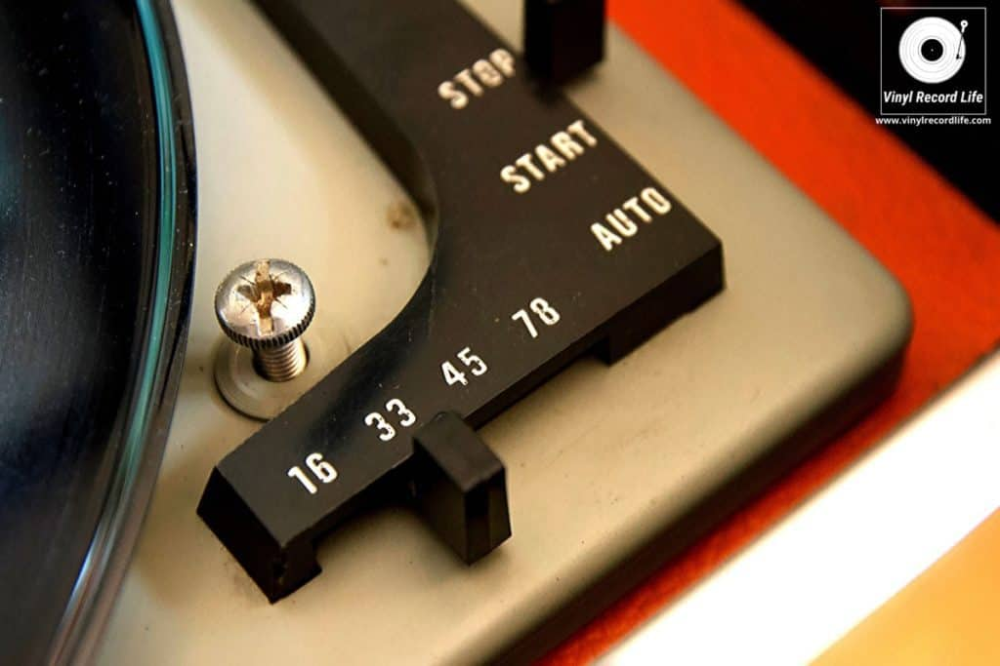
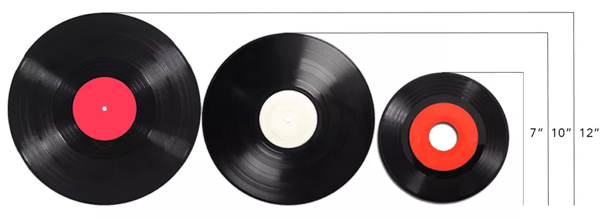

Vinyl records have actually been around for more than a century. What we know now as a record player, was first known as a phonograph when it was invented in 1877. It eventaully came to be known as a gramophone after 1887, and later as a record player since the 1940s. In more recent times however, they have been referred to as turntables.
Vinyl records have come in a large variety of different sizes, but there are 3 standardised sizes. Each size is played at different speeds, or rotations per minute (RPM). The first vinyl record player, the gramophone, utilised a 7 inch wide record, and had to be spun manually with a hand crank at 70 RPM. Over the next few years, the medium found itself in different formats, as sizes, materials and RPMs changed until 1930. That year, 'Long Play' records (Better known now as LPs) were made comercially available to the public
Vinyls nowadays come in 3 different standard Revolutions Per Minute speeds. 78, 45 and 33 1/3 RPMs. There are also niche speeds like 16RPM. Modern turntables typically can only choose between 33 1/3 and 45 RPM speeds
78RPM became the standard by 1925, but was phased out by the 1950s, due to the standards low storage capacity. Because of this, 78s are relatively rare. A 12 inch 78 RPM record could only hold 4 to 5 minutes of audio, due to the high speed at which the needle has to travel. So despite having the highest RPM, and thus potential audio quality, 78s were phased out. Modern record players cannot play 78RPM records, as they require a wider, 3mm needle, as compared to the typical 1mm.
33 1/3RPM was the next standard to come about. It made little impact on release to the comercial industry, as it was mainly used by radio stations. However, it rose in popularity in the 1950s. Today, you're most likely to come across records that use this standard
Lastly, there is the 45 RPM standard. The format is most common in single releases. It held little advantage over the 78 format. But, because 45s came typically came as 7 inch records, manufacturers focused on 33 1/3, and 45 RPM standards, thus phasing out 78s
Vinyls typically come in 12", 10" and 7" formats today, though there are a number of rare and niche sizes
12 Inch LP (Long Play) records are the most common format today for whole albums. They are typically played at 33 1/3 RPM, and can store up to 26 minutes of audio on boths sides of the disc. Although, some are played at 45RPM.
There is also the 12 inch single format. Similar to the previous format, this disc is also played at 33 1/3 to 45 RPM. Typically, each side of the disc is used to store only one track, thus why it is known as a 'singles' format. So what's the differene then? Unlike the LP format, singles sacrifice playtime by having wider grooves. This results in louder levels to be engraved onto the disc, resulting in a wider dynamic range and thus higher quality audio. These discs are typically used by DJs and collectors.
Next, there are the 7" and 10" single formats. As the name suggest, they are used to store sigle tracks on each side. They are typically played at 45RPM, and the 7" records were commonly used in jukebox machines, though 10" records were also occasionalyl used.
There are also EP (Extended Play) records. EPs come in 7" and 12" sizes, and were designed to be played at 33 1/3 and 45 RPM speeds. They are a cross between LPs and Singles, in that they sacrifice space for wider grooves in return for higher audio quality, but also store more than 1 track on either side of the disc.
Fun fact: the terms LP, EP, and single were first coined to describe different vinyl formats, but are now the music industry standard of referring to different types of releases
Lastly, I would like to briefly mention the different styles of vinyl that are available. Since vinyls are made by pressing grooves into a vinyl material, different colors and styles can be easily made by swapping out the vinyl material.
Some vinyls are printed in different colors
Others are pressed onto printed designs
Some even come in splatter designs